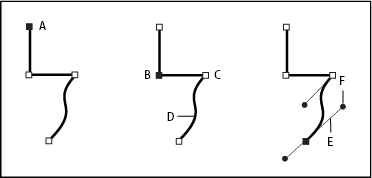
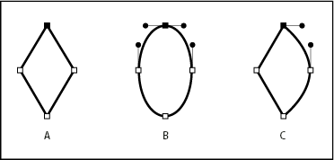
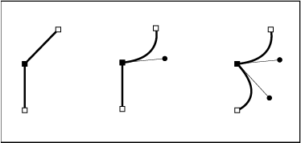

About paths
As you draw, you create a line called a path. A path is made up of one or more straight or curved segments. The beginning and end of each segment are marked by anchor points, which work like pins holding a wire in place. A path can be closed (for example, a circle), or open, with distinct endpoints (for example, a wavy line).
You change the shape of a path by dragging its anchor points, the direction points at the end of direction lines that appear at anchor points, or the path segment itself.

- A.
- Selected (solid) endpoint
- B.
- Selected anchor point
- C.
- Unselected anchor point
- D.
- Curved path segment
- E.
- Direction line
- F.
- Direction point
Paths can have two kinds of anchor points: corner points and smooth points. At a corner point, a path abruptly changes direction. At a smooth point, path segments are connected as a continuous curve. You can draw a path using any combination of corner and smooth points. If you draw the wrong kind of point, you can always change it.

- A.
- Four corner points
- B.
- Four smooth points
- C.
- Combination of corner and smooth points
A corner point can connect any two straight or curved segments, while a smooth point always connects two curved segments.

A path’s outline is called a stroke. A color or gradient applied to an open or closed path’s interior area is called a fill. A stroke can have weight (thickness), color, and a dash pattern (Illustrator and InDesign) or a stylized line pattern (InDesign). After you create a path or shape, you can change the characteristics of its stroke and fill.
In InDesign, each path also displays a center point, which marks the center of the shape but is not part of the actual path. You can use this point to drag the path, to align the path with other elements, or to select all anchor points on the path. The center point is always visible; it can’t be hidden or deleted.